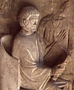
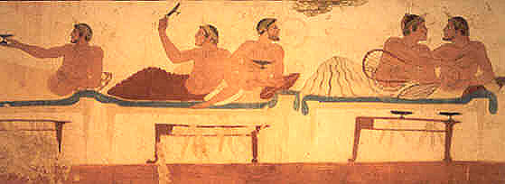
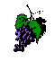
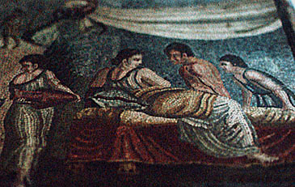
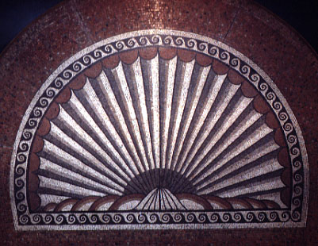

These pages, though they will not be updated, will remain on the web in tribute to Alison Barker (who died in December 2004), a gifted classicist, extraordinary teacher, and highly valued colleague.
 |
TEXTS AND TRANSLATIONS
Texts, Translations, Morphological Links

MYTHOLOGY

ARCHAEOLOGY

METER AND MISCELLANY
Integer vitae scelerisque purus...

Last updated 12/01/2003